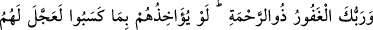
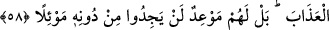
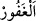
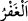
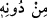

Sonra Nebî (a.s.)’ın onların müslüman olmaları konusundaki hırsı, O’nun: “Ben neden
onları İslam’a çağırmıyorum?” diye sormuş olması gibi değerlendirilmiş ve şöyle cevap
verilmiştir: “Sen onları hidâyete çağırsan da…” Onların Rasûlullah (s.a.)’in dâveti ile
hidâyete ermemeleri, onların hidâyete sebep olması gereken şeyi, O’nun dâvetinden yüz
çevirerek hidâyete ermeme sebebi kılmalarındandır.
58. Senin, bağışı bol olan Rabbin merhamet sâhibidir; şâyet yaptıkları yüzünden
onları (hemen) muâheze edecek olsaydı, onlara azâbı çarçabuk verirdi. Fakat
kendilerine tanınmış belli bir süre vardır ki, artık O’ndan kaçıp kurtulacakları bir
sığınak bulamayacaklardır.
“Senin, bağışı bol olan Rabbin merhamet sâhibidir;” “__WORD__ el-Gafûr” mağfireti çok
fazla demektir. Günahlarını af sebebiyle kulu hak ettiği cezadan korumaktır. “__WORD__ el-
Gafr”, bir şeyi kirden korumak için giydirmek demektir.
Rahmet, yaratılmışlara nimet vermek demektir. Burada rahmetin değil de mağfiretin
mübâlağa sıygası ile getirilmesi, günahların çokluğuna dikkat çekmek içindir. Mağfiret
ise zararlı olanları terk etmektir. Hak Sübhânehû Teâlâ, nihâyetsiz azâbı terk etmeye
kadirdir. Rahmet ise fiil ve îcâddır. (Hâdis) varlık dâiresine, ancak sonlu olanlar girer.
İlk vasfın (gafûr/bağışı bol olan) öne alınması, tahliyenin (hı ile) boşaltmanın,
tahliyeden (hâ ile) süsleyip bezemeden önce olmasındandır.
“Şâyet yaptıkları” günahlar “yüzünden onları (hemen) muâheze edecek olsaydı,”
onları cezalandırmak isteseydi, amelleri gerektirdiği için mühlet vermeksizin daha
dünyada iken “onlara azâbı çarçabuk verirdi.” Ancak O, onları cezalandırmakta acele
etmedi ve üzerlerine azâbı ansızın indirmedi.
“Fakat kendilerine tanınmış belli bir süre vardır ki,” Burada kastedilen ya Bedir
günüdür ya da azâb olunacakları kıyâmet günüdür. O günde vaad edilenin gelmesiyle
“artık O’ndan” Allah Teâlâ’dan başka “kaçıp kurtulacakları bir sığınak
bulamayacaklardır.”
“__WORD__ min dûnihî” ifâdesinin “artık azabdan başka kaçıp kurtulacakları bir
sığınak bulamayacaklardır” anlamında olduğu da söylenmiştir. Müftî Sa‘dî şöyle der:
“Bu görüş daha uygundur. Bu, onlar için hiçbir sığınak ve kurtuluş olmadığına en etkili
şekilde delâlet eder. Çünkü ateşten başka sığınacağı yer olmayan kimse, kurtuluş yolunu
nasıl görebilir?”
Burada anlamın: “Vaad edilen (azâb) geldiğinde, sığınacak bir yer bulamazlar.”
şeklinde olması da mümkündür. Gönlümüze doğan budur. En iyisini Allah bilir.